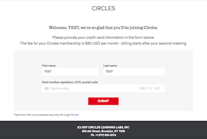
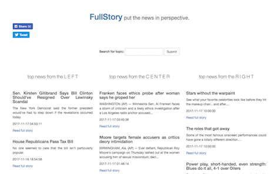

About
I am a developer based in Brooklyn, NY, with a particular passion for projects that deal with environmental conservation and social justice. I have worked to develop research and data collection tools for a number of local non-profit organizations, and currently work for a communications startup company.
I am available for freelance work - see the Contact section below.
Selected Projects
D-Bird
Concept, development
Stripe/AgileCRM Handler
Concept, development, design
Birding by Subway

Concept, development, design
FullStory
Assistant developer
Open-source Project Work
Press
Contact
Please feel free to reach out to me at darren.a.klein@gmail.com